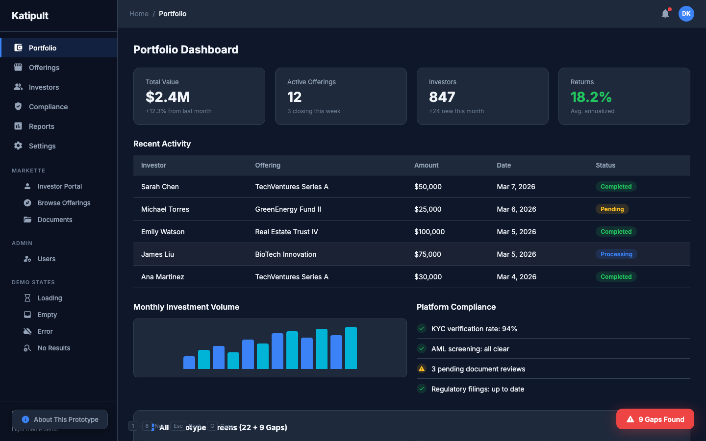
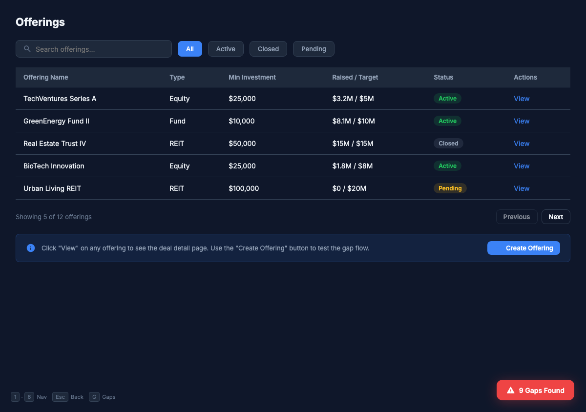
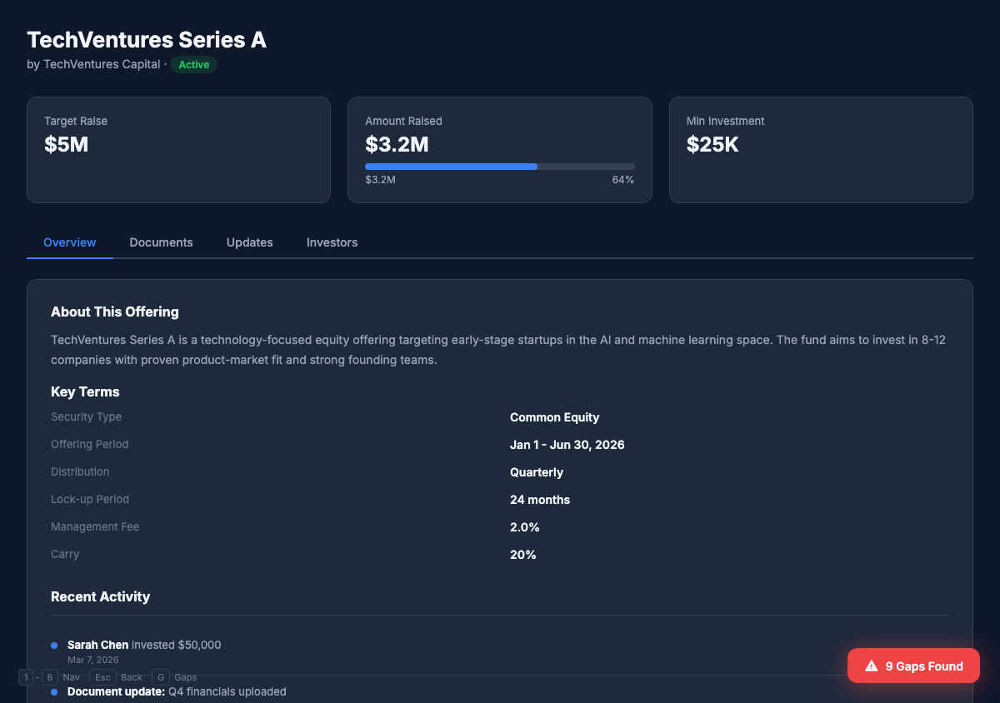
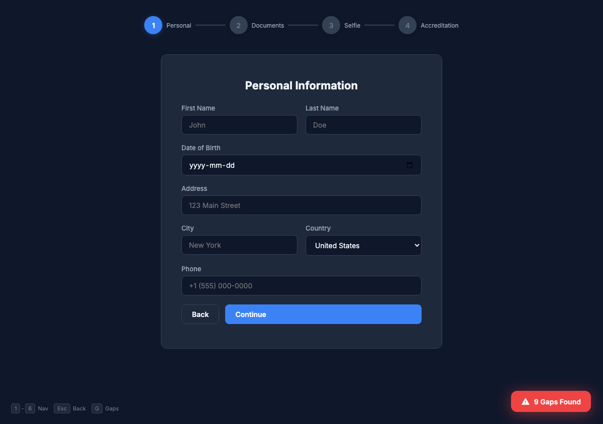
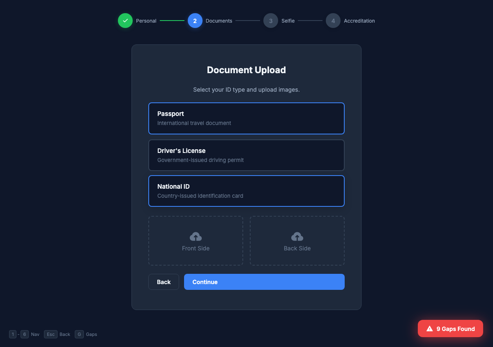
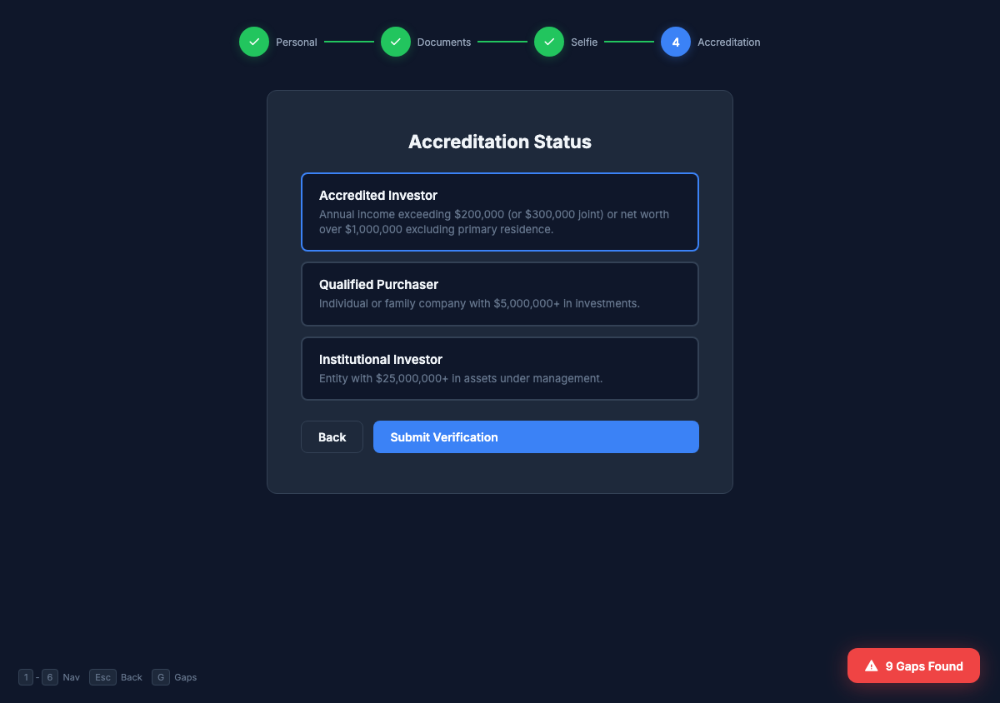
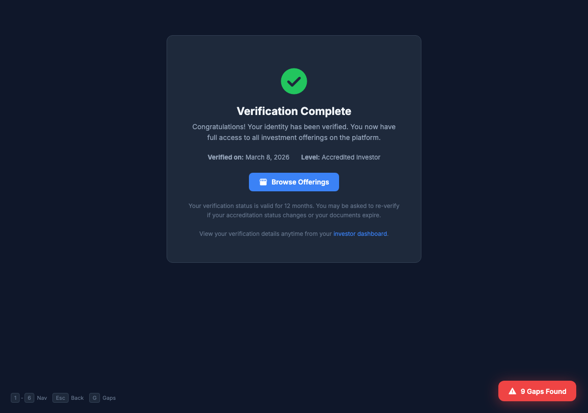

Compliance UX for Private Capital Markets
KYC/AML-compliant investor onboarding and electronic signature flows for enterprise clients. Turning hours of regulatory paperwork into streamlined digital experiences across 20+ jurisdictions.

BUSINESS CONTEXT
Katipult is a white-label infrastructure platform powering private capital markets. Investment dealers, fund managers, and crowdfunding portals use it to manage investor onboarding, deal flow, and compliance across multiple jurisdictions.
The goal: satisfy regulators in 20+ jurisdictions while keeping investors from abandoning the process.
PROBLEM STATEMENT
Before the redesign, investor onboarding was a paper-heavy process requiring manual document collection, in-person verification, and back-and-forth between compliance teams and investors. The experience was fragmented across email, fax, and physical mail.
DESIGN APPROACH
Working closely with compliance officers, legal teams, and real investors, I mapped the entire regulatory landscape before designing any screens. The approach prioritized progressive disclosure: showing investors only what they needed at each step.
USER FLOW
The onboarding flow adapts per jurisdiction. Investors see only the steps required for their region, with clear progress indicators throughout.
5 core steps. 20+ jurisdiction variants
KSIGN
Electronic Signature Module
KSign is an electronic signature module built into Katipult's DealFlow platform. It enables compliant investment document signing across 20 jurisdictions, handling everything from subscription agreements to regulatory disclosures.


UI SHOWCASE




RESULTS & IMPACT
The redesigned compliance flows transformed investor onboarding from a multi-day paper process into a streamlined digital experience.
Compliance UX for Private Capital Markets
Katipult. Co-Founder & Lead Product Designer. 2014-2023